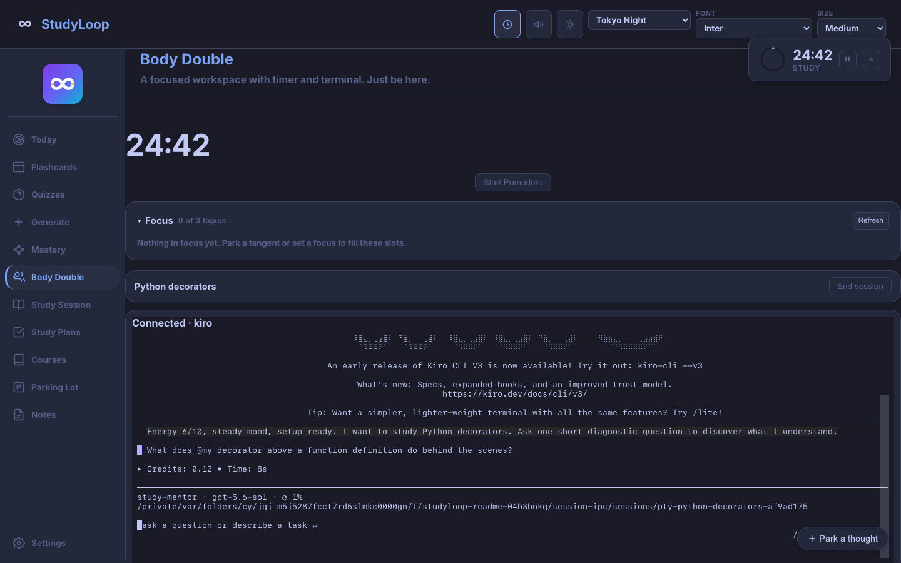

Web UI Guide¶
The StudyLoop Web UI brings live mentoring, body doubling, review, plans, and session evidence into one local browser workspace.
studyloop web
Open the address printed in the terminal. Keep that terminal running while you use the app.
Supported screens and connectivity
Use a laptop or tablet. Phone screens are not supported. The app also does not work offline: there is no service worker, so the StudyLoop server must be reachable whenever you open it.
Study Session¶
Use Study Session when you want to understand, practise, debug, or teach back a specific topic.
- Open Study Session in the sidebar.
- Enter one topic.
- Choose an installed agent and set your energy from 1 to 10.
- Start the session and answer the mentor in the terminal or chat surface.
- Park tangents instead of switching tasks.
- End the session from the status bar so the summary and evidence are saved.

The terminal shown above is Kiro running inside the real StudyLoop session surface. Other installed agents appear in the same picker. Depending on the agent, StudyLoop renders either a live terminal or a structured chat surface.
The bottom status bar keeps the timer, topic, energy, wins, parked items, and review count visible without interrupting the conversation.
Body Double¶
Use Body Double when the difficult part is starting or staying alongside the work rather than learning a new concept.
- Open Body Double.
- Name the activity in concrete terms, such as “trace one decorator call”.
- Choose an agent and start the Pomodoro timer if a time box would help.
- Start the body-double session.
- Use Focus for up to three active topics and Park a thought for anything that can wait.
- End the session when the work block is complete.

Body Double deliberately uses the same session lifecycle as Study Session, so the work is still recorded and can be resumed later. The tone is lighter: the agent is there to maintain presence and help with the next small commitment.
Today¶
Today reduces a crowded backlog to one recommended action using the time and energy you have, recent continuity, due reviews, and weak concepts. Treat it as a starting suggestion, not an instruction. If the action is wrong, choose a smaller one or move to Study Session directly.
Active study plans do not yet influence this recommendation.
Flashcards and quizzes¶
The review screens use locally generated course material and your StudyLoop database.
- Flashcards schedule reviews with SM-2 and record each rating.
- Quizzes provide retrieval practice from generated question sets.
- Filters help narrow a large course or chapter before starting.
- The study heatmap shows activity, not a moral score; a gap does not create catch-up debt.
Generate material through the Content Pipeline before the review screens will have anything to show.
Study Plans¶
The Study Plans view lists plan status and milestone progress, opens the Markdown plan as a readable document, and lets you preview or record checkpoints. New plan begins with a free-text description, followed by manual structured fields.
The current Web UI does not send that brain dump to an agent for decomposition. See Study Plans for the full, current workflow.
Courses, Mastery, Parking Lot, and Notes¶
- Courses browses ingested learning material and can copy a Socratic prompt for discussion.
- Mastery visualises concept relationships and weak links after evidence has been recorded.
- Parking Lot holds questions that matter but do not belong in the current focus.
- Notes can add context to a study session. Notes are optional and are not treated as evidence of learning by themselves.
Timer, themes, and voice¶
The header controls the Pomodoro timer, theme, font, and text size. Preferences stay in the browser.
The speaker control enables StudyLoop announcements and exposes the voice
selector. Individual flashcards can be read aloud with their speaker button or
the T key. There is no automatic “read every card” mode.
Speech first uses the configured Kokoro-compatible server. If that is not available, StudyLoop can fall back to operating-system voices, and then to silence. See Voice Output for setup and privacy details.
Use it from another device¶
To open StudyLoop from a tablet or another laptop on the same trusted network:
studyloop web --lan
Use the address and password printed in the terminal. LAN mode uses HTTP Basic Auth, but it is still intended for a trusted local network—not direct exposure to the internet. A tunnel or reverse proxy changes the security boundary and is not part of the supported quick path.
If a live agent does not appear¶
- End any stuck session from the Web UI if the control is available.
- Run
studyloop doctor --fix. - Confirm the chosen agent launches normally from its own CLI.
- Restart
studyloop weband try one small session. - Use Troubleshooting if the agent remains unavailable.
Do not install ttyd for the Web UI. Current live sessions use StudyLoop's
terminal or chat surfaces; the retired ttyd iframe is not a learner-facing path.